ggplot(mtcars, aes(x = wt, y = mpg)) +
geom_point() +
geom_smooth(method = "lm")`geom_smooth()` using formula = 'y ~ x'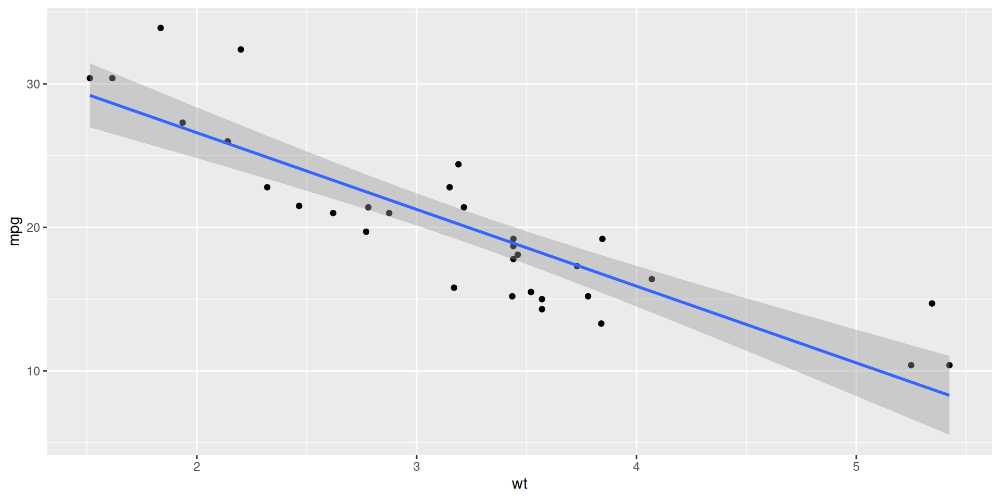
Lecture 23
ggplot(mtcars, aes(x = wt, y = mpg)) +
geom_point() +
geom_smooth(method = "lm")`geom_smooth()` using formula = 'y ~ x'
linear_reg() |>
fit(mpg ~ wt, data = mtcars) |>
tidy()# A tibble: 2 × 5
term estimate std.error statistic p.value
<chr> <dbl> <dbl> <dbl> <dbl>
1 (Intercept) 37.3 1.88 19.9 8.24e-19
2 wt -5.34 0.559 -9.56 1.29e-10Different data >> Different estimate. But how different?
Reassuring: recompute your estimate on other data and get basically the same answer. Sampling variation is low. Uncertainty is low. Results are more reliable;
Concerning: recompute your estimate on new data and get a wildly different answer. Sampling variation is high. Uncertainty is high. Results are less reliable.
How do we operationalize this?
Construct different, alternative datasets by sampling with replacement from your original data. Each bootstrap sample gives you a different estimate, and you can see how vigorously they wiggle around:
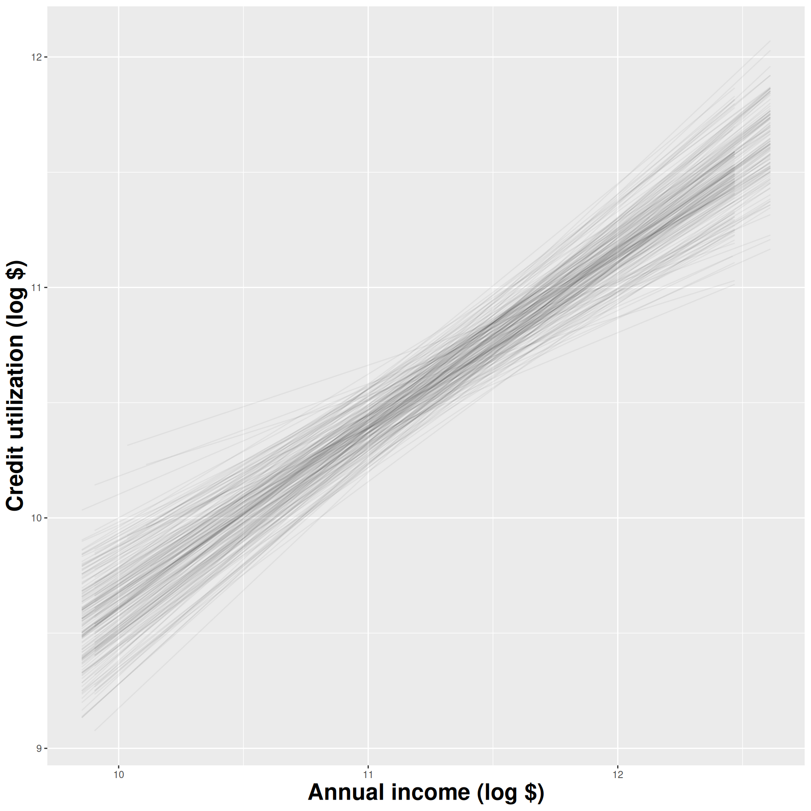
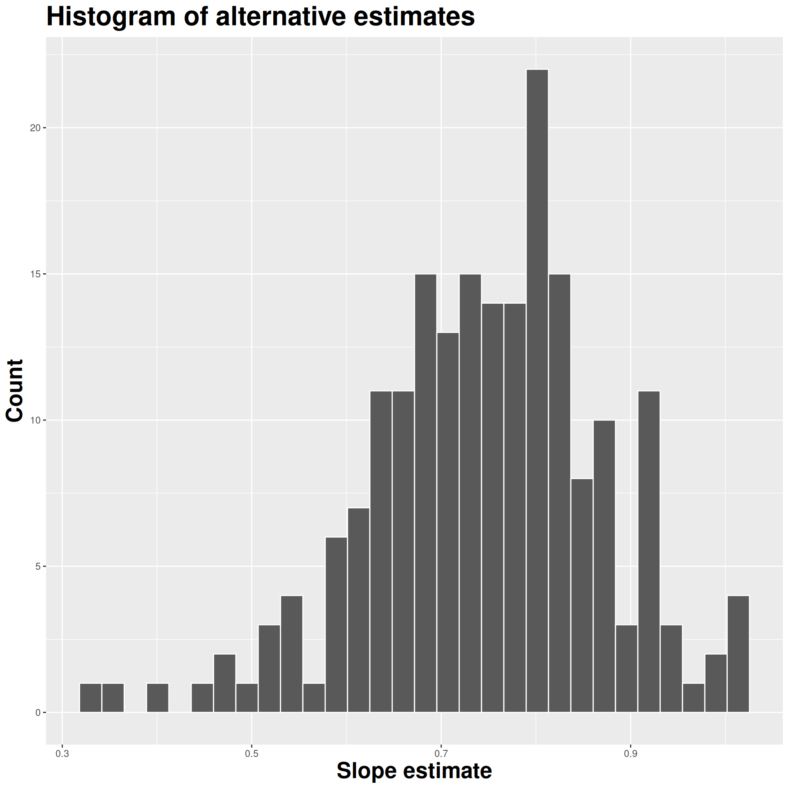
Use the bootstrap distribution to construct a range of likely values for the unknown parameter:

We use quantiles (think IQR), but there are other ways.
Two competing claims about \(\beta_1\): \[ \begin{aligned} H_0&: \beta_1=0\quad(\text{nothing going on})\\ H_A&: \beta_1\neq0\quad(\text{something going on}) \end{aligned} \]
Do the data strongly favor one or the other?
How can we quantify this? p-values!
p-value is the fraction of the histogram area shaded red:
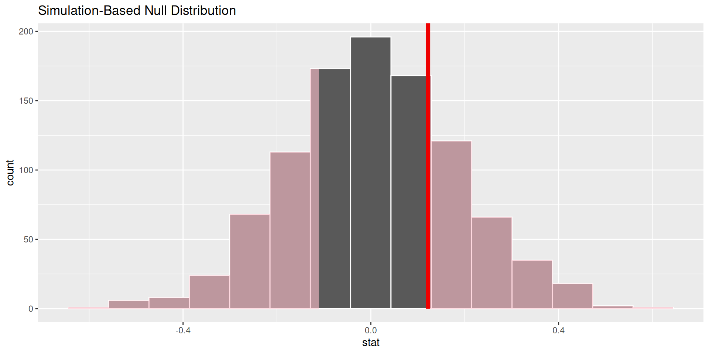
How do we decide if the p-value is big enough or small enough?
Pick a threshold \(\alpha\in[0,\,1]\) called the discernibility level:
Standard choices: \(\alpha=0.01, 0.05, 0.1, 0.15\).
Goal: Predicting mean household income using the percent of a county that is uninsured
We did inference with counties_sample, a small sample of 25 counties in the US
observed_fit <- counties_sample |>
specify(mean_household_income ~ uninsured) |>
fit()
observed_fit# A tibble: 2 × 2
term estimate
<chr> <dbl>
1 intercept 79489.
2 uninsured -884.null_dist <- counties_sample |>
specify(mean_household_income ~ uninsured) |>
hypothesize(null = "independence") |>
generate(reps = 1000, type = "permute") |>
fit()
null_dist |>
filter(term == "uninsured") |>
ggplot(aes(x = estimate)) +
geom_histogram()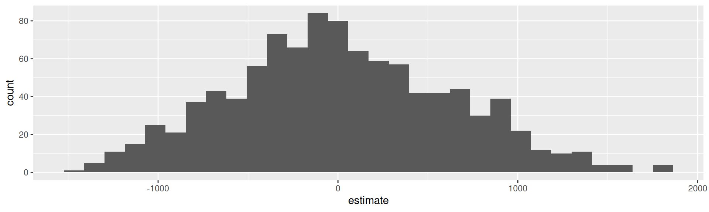
null_dist <- counties_sample |>
specify(mean_household_income ~ uninsured) |>
hypothesize(null = "independence") |>
generate(reps = 1000, type = "permute") |>
fit()
null_dist# A tibble: 2,000 × 3
# Groups: replicate [1,000]
replicate term estimate
<int> <chr> <dbl>
1 1 intercept 73680.
2 1 uninsured -279.
3 2 intercept 71343.
4 2 uninsured -35.3
5 3 intercept 69869.
6 3 uninsured 118.
7 4 intercept 62820.
8 4 uninsured 853.
9 5 intercept 84203.
10 5 uninsured -1376.
# ℹ 1,990 more rowsRecall: Bootstrapping for confidence intervals
We created a bunch of new data sets by resampling from our original data set
We computed an estimate for each new data set
Here:
We are creating a bunch of new data sets by permuting our original data set and computing an estimate for each
Instead of attempting to mimic samples from the population data (like boostrapping), we are attempting to mimic samples from the null
We are simulating what the world would look like if the null hypothesis were true: what if mean_household_income and uninsured are unrelated?
mean_household_income
uninsured) unchangedreps = 1000)Original:
| Uninsured (%) | Mean Income ($k) |
|---|---|
| 5 | 70 |
| 8 | 65 |
| 6 | 68 |
| 7 | 66 |
| 9 | 64 |
Original:
| Uninsured (%) | Mean Income ($k) |
|---|---|
| 5 | 70 |
| 8 | 65 |
| 6 | 68 |
| 7 | 66 |
| 9 | 64 |
Permutation 1:
| Uninsured (%) | Mean Income ($k) |
|---|---|
| 8 | 70 |
| 5 | 65 |
| 7 | 68 |
| 9 | 66 |
| 6 | 64 |
Original:
| Uninsured (%) | Mean Income ($k) |
|---|---|
| 5 | 70 |
| 8 | 65 |
| 6 | 68 |
| 7 | 66 |
| 9 | 64 |
Permutation 2:
| Uninsured (%) | Mean Income ($k) |
|---|---|
| 5 | 70 |
| 7 | 65 |
| 9 | 68 |
| 8 | 66 |
| 6 | 64 |
. . .
Do this reps times; make a histogram of slope estimates!
The null distribution shows the plot of
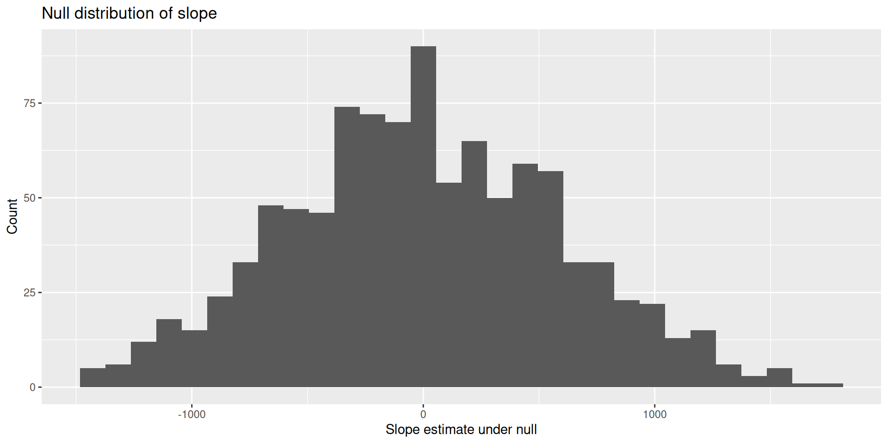
Compare the slope from the original data set to our null distribution!
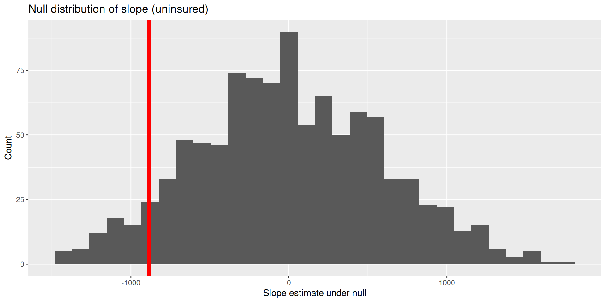
visualize(null_dist) +
shade_p_value(obs_stat = observed_fit, direction = "two-sided")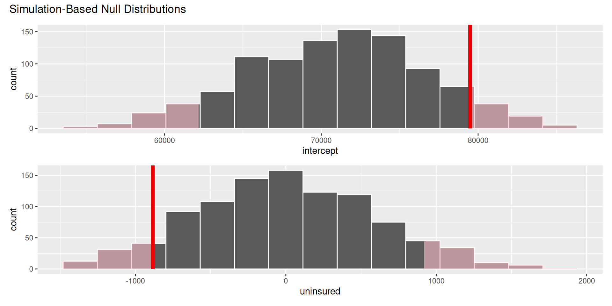
null_dist |>
get_p_value(obs_stat = observed_fit, direction = "two-sided")# A tibble: 2 × 2
term p_value
<chr> <dbl>
1 intercept 0.138
2 uninsured 0.138Think hypothetically: if the null hypothesis were in fact true, would my results be out of the ordinary?
My results represent the reality of actual data. If they conflict with the null, then you throw out the null and stick with reality;
How do we quantify “would my results be out of the ordinary”?
What if I want to test if the means of two groups are actually different from each other?
A random sample of US births from 2014:
births14 <- births14 |> drop_na(weight, habit)
births14# A tibble: 981 × 13
fage mage mature weeks premie visits gained weight lowbirthweight
<int> <dbl> <chr> <dbl> <chr> <dbl> <dbl> <dbl> <chr>
1 34 34 young… 37 full … 14 28 6.96 not low
2 36 31 young… 41 full … 12 41 8.86 not low
3 37 36 matur… 37 full … 10 28 7.51 not low
4 NA 16 young… 38 full … NA 29 6.19 not low
5 32 31 young… 36 premie 12 48 6.75 not low
6 32 26 young… 39 full … 14 45 6.69 not low
7 37 36 matur… 36 premie 10 20 6.13 not low
8 29 24 young… 40 full … 13 65 6.74 not low
9 30 32 young… 39 full … 15 25 8.94 not low
10 29 26 young… 39 full … 11 22 9.12 not low
# ℹ 971 more rows
# ℹ 4 more variables: sex <chr>, habit <chr>, marital <chr>,
# whitemom <chr>Do babies born to mothers who smoke have lower body weights than non-smoking mothers?
births14 |>
ggplot(aes(x = weight, y = habit)) +
geom_boxplot(alpha = 0.5) +
labs(
x = "Birth Weight (lbs)",
y = "Mother smoking status"
)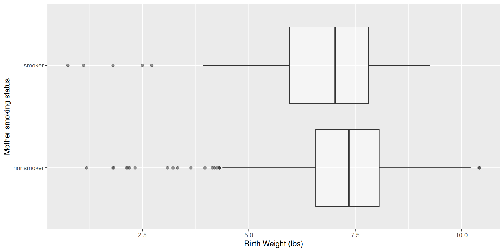
linear_reg() |>
fit(weight ~ habit, data = births14) |>
tidy()# A tibble: 2 × 5
term estimate std.error statistic p.value
<chr> <dbl> <dbl> <dbl> <dbl>
1 (Intercept) 7.27 0.0435 167. 0
2 habitsmoker -0.593 0.128 -4.65 0.00000382\[ \widehat{weight}=7.27-0.59\times \texttt{smoker}. \]
\[ \widehat{weight}=7.27-0.59\times \texttt{smoker}. \]
habit is categorical with two levels: smoker and non-smoker.
The baseline is non-smoker, with \[
\widehat{weight} = 7.27;
\]
The smoking group has smoker = 1, so \[
\widehat{weight} = 7.27 - 0.59 = 6.68.
\]
births14 |>
group_by(habit) |>
summarize(
mean_weight = mean(weight)
)# A tibble: 2 × 2
habit mean_weight
<chr> <dbl>
1 nonsmoker 7.27
2 smoker 6.68. . .
In a simple linear regression with a numerical response and a binary predictor, the slope estimate is the difference in the average response between the two groups.
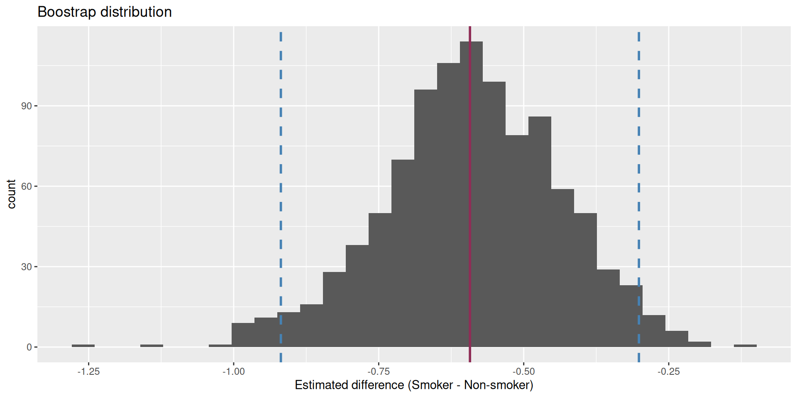
We are 95% confident that the true mean difference is between -0.919 and -0.301. This does not contain 0!!!
Are the data sufficiently informative to tell the difference between these two possibilities?
\[ \begin{aligned} H_0&: \beta_1=0 && (\text{no effect})\\ H_0&: \beta_1\neq0 && (\text{some effect})\\ \end{aligned} \]
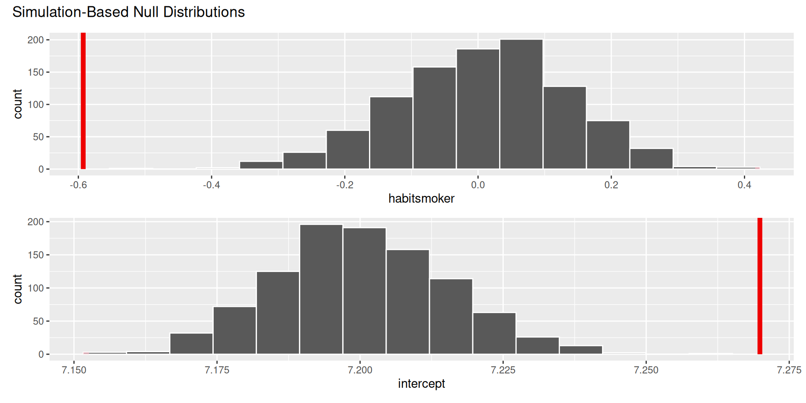
. . .
The p-value is basically zero.
Evidence is sufficient to reject the null: smoking during pregnancy is associated with a difference in birth weight;
Is smoking causing birth weight to change?
The data are observational, and there are many unmeasured factors that could bear on both habit and weight.
Maybe there is a causal relationship, and maybe it can be teased out with data like these, but it is not so straightforward
. . .
Just because there is a statistically discernible association does not mean there is a causal relationship.
Best hope: run a controlled, randomized experiment:
Observational data are very challenging:
Does treatment using embryonic stem cells (ESCs) help improve heart function following a heart attack? Each sheep in the study was randomly assigned to the ESC or control group, and the change in their hearts’ pumping capacity was measured in the study. A positive value corresponds to increased pumping capacity, which generally suggests a stronger recovery.
. . .
glimpse(stem_cell)Rows: 18
Columns: 3
$ trmt <fct> ctrl, ctrl, ctrl, ctrl, ctrl, ctrl, ctrl, ctrl, ctrl,…
$ before <dbl> 35.25, 36.50, 39.75, 39.75, 41.75, 45.00, 47.00, 52.0…
$ after <dbl> 29.50, 29.50, 36.25, 38.00, 37.50, 42.75, 39.00, 45.2…stem_cell <- stem_cell |>
mutate(change = after - before)
ggplot(stem_cell, aes(x = change, y = trmt)) +
geom_boxplot()
linear_reg() |>
fit(change ~ trmt, data = stem_cell) |>
tidy()# A tibble: 2 × 5
term estimate std.error statistic p.value
<chr> <dbl> <dbl> <dbl> <dbl>
1 (Intercept) -4.33 1.38 -3.14 0.00639
2 trmtesc 7.83 1.95 4.01 0.00102\[ \widehat{change}=-4.33+7.83\times \texttt{esc} \]
\[ \widehat{change}=-4.33+7.83\times \texttt{esc} \]
trmt is categorical with two levels: ctrl (0) and esc (1).
The control group has esc = 0, so \[
\widehat{change} = -4.33;
\]
The treatment group has esc = 1, so \[
\widehat{change} = -4.33+7.83=3.5.
\]
stem_cell |>
group_by(trmt) |>
summarize(
mean_change = mean(change)
)# A tibble: 2 × 2
trmt mean_change
<fct> <dbl>
1 ctrl -4.33
2 esc 3.5 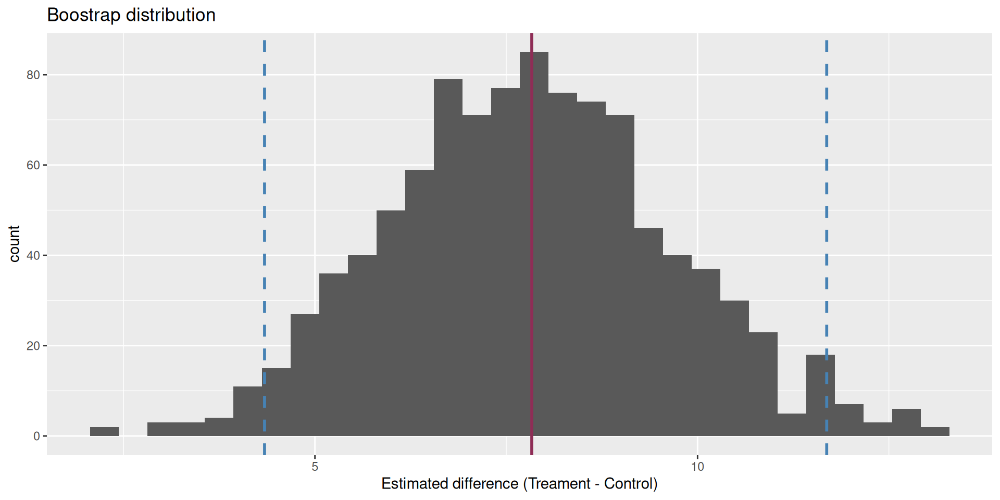
We are 95% confident that the true mean difference is between 4.34 and 11.7.
Are the data sufficiently informative to tell the difference between these two possibilities?
\[ \begin{aligned} H_0&: \beta_1=0 && (\text{no effect})\\ H_0&: \beta_1\neq0 && (\text{some effect})\\ \end{aligned} \]
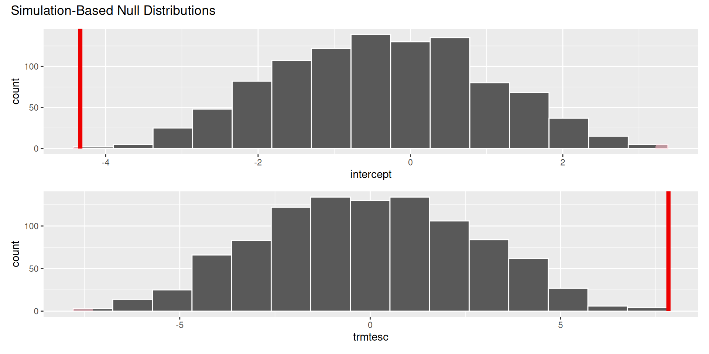
. . .
The p-value is basically zero.
In a hypothetical world where the treatment has no effect, it would be very unlikely to get results like the ones we did;
Evidence is sufficient to reject the null. There is some effect;
If you are convinced by the experimental design, the effect is causal;
Is the effect large and meaningful and something you should base major decisions on? Statistics cannot answer that question!
Today’s AE: Inference Overview